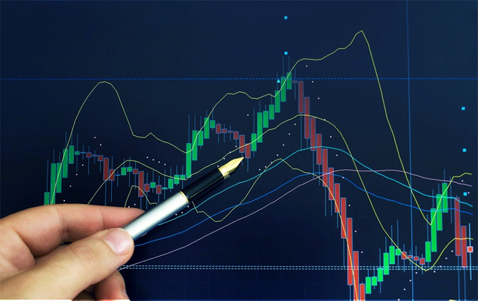

El trading es la actividad de compra y venta de activos financieros, como acciones, divisas, criptomonedas, materias primas y otros instrumentos, en mercados financieros. El objetivo principal del trading es obtener ganancias a partir de las variaciones en el precio de estos activos, aprovechando los movimientos de alza o baja en el mercado. Para realizar esta actividad, los traders recurren a diversas estrategias y enfoques, como el análisis técnico y el análisis fundamental, que les ayudan a prever la dirección de los precios y a tomar decisiones informadas.
Existen diferentes estilos de trading en función del horizonte temporal de la inversión. Algunos traders buscan obtener beneficios en el muy corto plazo, realizando operaciones en cuestión de segundos o minutos, mientras que otros prefieren mantener sus posiciones durante días, semanas o incluso meses. Además, el trading puede llevarse a cabo en mercados tradicionales, como la Bolsa de Valores, y en mercados emergentes, como el de criptomonedas, que operan las 24 horas del día, los siete días de la semana.
La actividad de trading requiere conocimientos de los factores que influyen en el comportamiento de los precios, como la oferta, la demanda, los eventos económicos y las noticias de mercado. Asimismo, el trading implica una gestión de riesgos activa, ya que los movimientos del mercado pueden generar tanto ganancias como pérdidas.

- Análisis Técnico: Esta estrategia se basa en el estudio de gráficos y patrones de precios para predecir futuros movimientos en el mercado. Los traders que utilizan el análisis técnico creen que los precios siguen tendencias, y para identificarlas emplean indicadores técnicos como las medias móviles, el RSI (Índice de Fuerza Relativa), las bandas de Bollinger y niveles de soporte y resistencia. La idea es identificar patrones repetitivos que se puedan aprovechar para entrar o salir de una posición.
- Análisis Fundamental: A diferencia del análisis técnico, el análisis fundamental se centra en el valor intrínseco de un activo, considerando factores económicos, financieros y de mercado. Los traders que emplean esta estrategia estudian los reportes financieros de las empresas, el contexto macroeconómico y los eventos globales que puedan impactar el valor de un activo. El análisis fundamental es común en el trading de acciones y en el mercado de divisas, y suele aplicarse para decisiones de inversión a medio o largo plazo.
- Scalping: El scalping es una estrategia de corto plazo que consiste en realizar múltiples operaciones durante el día para obtener pequeñas ganancias en cada transacción. Los scalpers, o traders que usan esta estrategia, operan en intervalos de segundos o minutos y se basan en movimientos muy pequeños del precio. Esta estrategia requiere alta velocidad, enfoque y una comprensión profunda de la dinámica del mercado.
- Day Trading: El day trading es una estrategia en la que el trader abre y cierra todas sus posiciones dentro de un mismo día, sin dejar operaciones abiertas de un día para otro. Los day traders buscan beneficiarse de los movimientos intradía de precios, operando en plazos cortos, pero con mayores movimientos que en el scalping. Este enfoque permite evitar el riesgo asociado a mantener posiciones abiertas durante la noche, cuando pueden ocurrir eventos inesperados que alteren los precios.
- Swing Trading: El swing trading es una estrategia de mediano plazo en la que el trader mantiene sus posiciones durante varios días o incluso semanas para aprovechar las tendencias de precio más prolongadas. Los swing traders utilizan tanto análisis técnico como análisis fundamental y buscan captar "oscilaciones" en el mercado, es decir, subidas y bajadas en una misma tendencia
- Trading de Posición: También conocido como "position trading", esta estrategia se enfoca en capturar movimientos a largo plazo en el mercado. Los traders de posición mantienen sus inversiones durante meses o años, y basan sus decisiones en el análisis fundamental. Su objetivo es identificar activos con un gran potencial de apreciación en el tiempo y mantener sus posiciones independientemente de las fluctuaciones de precio a corto plazo.
- Trading de Noticias: Esta estrategia se basa en la reacción del mercado a noticias y eventos que afectan significativamente el precio de los activos. Los traders de noticias se enfocan en eventos económicos como informes de ganancias, decisiones de tasas de interés, indicadores macroeconómicos o situaciones geopolíticas. Los movimientos rápidos del mercado a partir de noticias pueden representar oportunidades de ganancia, aunque el riesgo también es alto debido a la volatilidad que generan estos eventos.
- Arbitraje: El arbitraje es una estrategia que implica comprar y vender el mismo activo en diferentes mercados para aprovechar las diferencias de precio entre ellos. Este tipo de trading es más común en los mercados de divisas y criptomonedas, donde existen múltiples plataformas de intercambio. Aunque las ganancias en cada operación de arbitraje suelen ser pequeñas, la velocidad de ejecución y la repetición de las operaciones pueden hacer que la estrategia sea rentable.
- Trading Automatizado o Algorítmico: El trading automatizado utiliza algoritmos y programas informáticos para ejecutar operaciones de manera automática según ciertos criterios predefinidos. Los traders pueden programar sistemas de trading para que reaccionen a condiciones de mercado específicas, y los algoritmos se ejecutan sin intervención humana. Esta estrategia permite aprovechar oportunidades de trading en milisegundos y se utiliza tanto en el trading institucional como en el trading minorista.
- Hedging: El hedging o cobertura es una estrategia de reducción de riesgo que implica abrir posiciones opuestas para protegerse de posibles pérdidas en el mercado. Esta técnica es utilizada comúnmente por traders que desean minimizar la exposición a la volatilidad o proteger una inversión previa. Por ejemplo, un trader puede mantener una posición de compra en un activo, pero abrir una posición de venta en otro activo correlacionado para mitigar el riesgo.
Cada una de estas estrategias de trading implica diferentes riesgos, niveles de tiempo y conocimientos, y la elección de una u otra dependerá del perfil de inversión y los objetivos del trader. Además, muchas veces los traders combinan varias estrategias para adaptarse a las condiciones cambiantes del mercado y diversificar sus operaciones.